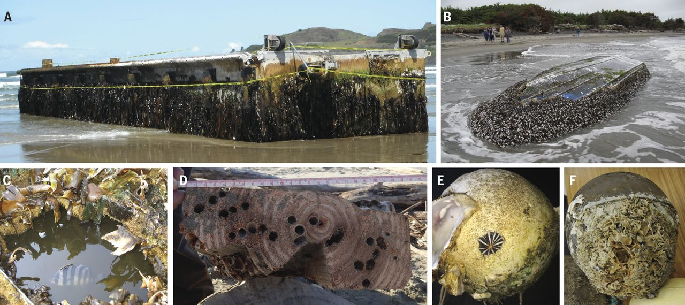

The great wave: Art, science, and travelers from the 2011 Japan tsunami

The Great Wave, or Under the Wave off Kanagawa (Kanagawa oki nami ura) by Katsushika Hokusai (Source: Art Institute of Chicago)
In 2011, a destructive tsunami hit Japan, causing loss of life and widespread damage. One interesting consequence: Debris washing out into the Pacific turned up on the shores of the U.S. West Coast. And each new arrival brought a host of aquatic hitchhikers.
 Japanese tsunami marine debris rafts and associated biota (Source: Carlton et al. 2017)
Buoys, boats, and an entire fishing dock traveled from Japan all the way to the coasts of Oregon and Washington in the aftermath of the 2011 tsunami. These “rafts” brought an incredible variety of non-native marine organisms to U.S. waters. Hundreds of species arrived in the years following the tsunami. (They were still arriving in 2017, six years later, when this paper was published.)
Because many manmade objects are now made of durable plastic materials, they can remain intact through a yearslong transoceanic crossing. The Pacific Ocean is roughly 5,000 miles across. Without manmade debris, a transoceanic migration of species on this scale would have been near impossible.
In a fascinating exploration of the effects of human society on marine ecosystems, artist Alexis Rockman painted a series of works for the Mystic Seaport Museum titled Oceanus. One painting from this series, Tsunami, is inspired by Hokusai’s The Great Wave and depicts the species that crossed the Pacific after the 2011 tsunami.

Tsunami (2022) by Alexis Rockman (Source: Alexis Rockman - Oceanus)

A key to the species in Tsunami (2022) (Source: Alexis Rockman - Oceanus)
This helpful key tells you which species are shown in the painting. The level of detail is incredible. I keep going back to the museum to gaze at the watercolors, taking in a little bit more each time. The rest of the exhibit is also spectacular. You can view the paintings online here.
As Alexis Rockman shows us the strange beauty of marine life, we are invited to contemplate the strangeness of the situation– human influence and nature’s unexpected response– with equal wonder.
Footnote: As a fun aside for my Williams-Mystic folks, the paper on this topic was written by Jim Carlton, Williams-Mystic professor emeritus, renowned biogeographer, and the namesake of the Carlton Marine Science Center, where Williams-Mystic students attend class and perform scientific research.
Enjoy Reading This Article?
Here are some more articles you might like to read next: